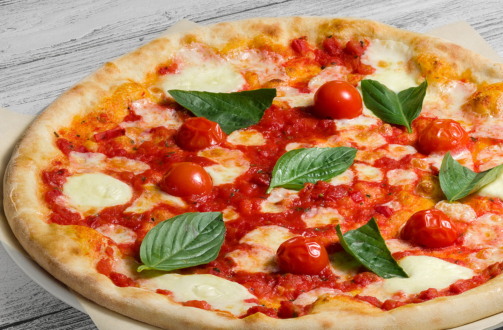

- Ингредиенты для начинки
- Сыр моцарелла - 250г
- Томатный соус - 100гр
- Томаты черри - 100гр
- Базилик и чеснок - по вкусу

Маргарита
Пицца Маргарита — самый распространенный классический рецепт пиццы итальянской кухни. С самым простым и доступным составом для рецепта: свежие сыр, помидоры, базилик
1. Подготовленное тесто смазать томатным соусом
2. Сыр натереть на крупной терке и равномерно распределить по диаметру пиццы
3. Выложить дольки томатов
4. Сбрызнуть оливковым маслом и приправить
5. Выпекать в течение 8-10 минут до хрустящей корочки при 220-240°С
P.S. Не зацикливайтесь на одних помидорах и сыре, вы всегда можете проявить свою фантазию и изменить основной состав. Овощи на гриле, оливки, ветчина, пикантная колбаса, шпинат и яйцо…
Buon appetito